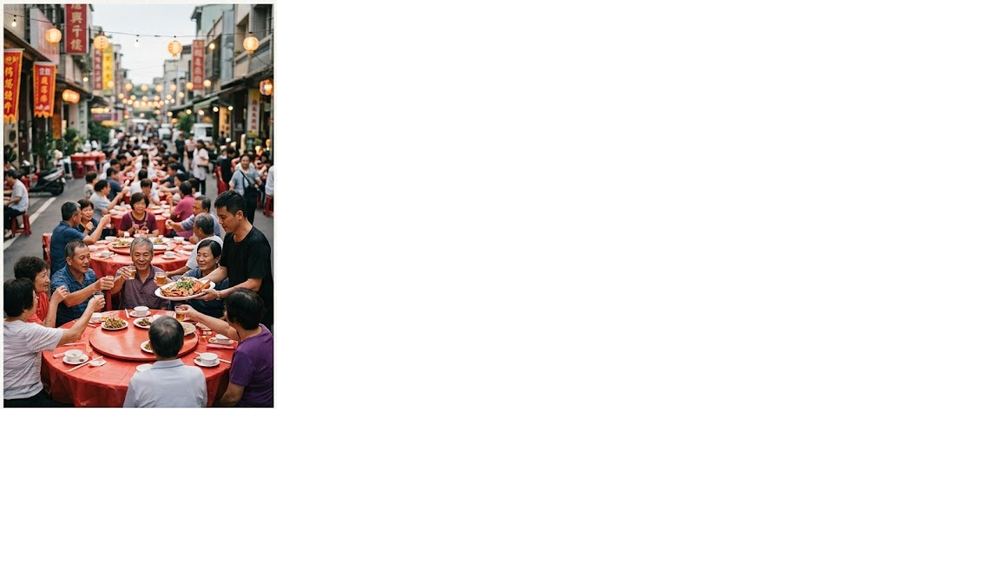

台式日常色彩
精準淬鍊「辦桌紅、棚架藍、圓凳綠」，揚棄傳統塑膠的廉價感，結合半透明材質與當代排版。
故事
「辦桌（Pan-toh）」是台灣街頭最魔幻寫實的流動盛宴。我們提取流水席中「流動、分享、相聚」的核心精神，將經典的辦桌紅、棚架藍與圓凳綠，融入現代洗練的幾何語彙與永續循環材質。
這不只是復古的懷舊，而是一次將「常民記憶」轉化為當代生活風格的嘗試。昔日馬路上的大排場，是鄰里互助與人情味的極致體現。隨著都市化發展，這項街頭儀式逐漸移入室內，常民美學的符號也面臨斷代。
我們相信，辦桌的靈魂在於「因地制宜、隨處分享」。不論身在何處，只要有人相聚、有故事交流，透過設計的轉譯，那裡就是一場台灣盛宴。
文化背景
台灣街頭辦桌，是社群傳統、節慶儀式與共享餐桌交織出的文化符號。透過設計，我們保留那份濃郁的人情味，並以永續材料賦予它新的日常價值。

特色
精準淬鍊「辦桌紅、棚架藍、圓凳綠」，揚棄傳統塑膠的廉價感，結合半透明材質與當代排版。
呼應流水席迅速組裝的流動特質。餐具與包裝採模組化設計，讓「隨處皆可辦桌」成為日常可能。
翻轉辦桌高碳排的一次性印象，全系列採用易回收、可重複使用的環保複合材質。
情境
帶上便攜餐具組，在草地上搭配防水帆布提袋，現代露營也能擁有台式浪漫。
模組化餐具易堆疊、好收納，隨時與朋友搭建一個分享美食與靈感的微型聚落。
精緻視覺與文化誌，是送給外國友人或設計愛好者最具深度的台味禮品。
產品預覽
細節
將總鋪師的經典手路菜譜轉化為抽象幾何圖騰，採 120g 永續環保美術紙與雙色孔版印刷。
翻轉經典粉紅塑膠碗與紅圓凳意象，餐具可完美堆疊，含防水再生帆布與四人份套件。
結合精緻攝影與互動資訊圖表，解構辦桌空間配置、出菜順序與飲食社會演變。
| 品項 | 視覺與功能亮點 | 材質與規格 |
|---|---|---|
| 視覺識別與風格海報 | 將總鋪師的經典手路菜譜轉化為抽象幾何圖騰。 | 120g 永續環保美術紙 / 雙色孔版印刷 |
| 「開席啦！」便攜式餐具組 | 翻轉經典粉紅塑膠碗與紅圓凳意象，餐具可完美堆疊。 | 環保複合材質 (PCTG、竹纖維)、防水再生帆布 |
| 「辦桌指南」文化誌 | 結合精緻攝影與互動資訊圖表，解構辦桌的空間配置與文化演變。 | 裸背穿線裝幀 / 80頁全彩印刷 |
聯絡
不論你是尋求品牌聯名、大宗禮品訂購，還是畢業設計策展交流，都歡迎與我們聯絡，一起讓傳統文化在當代優雅開席。